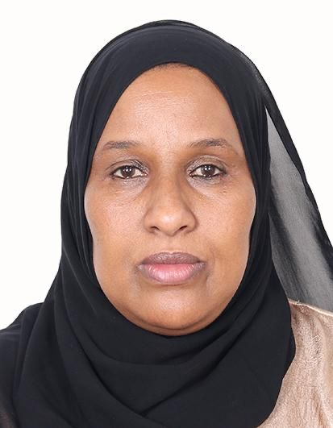
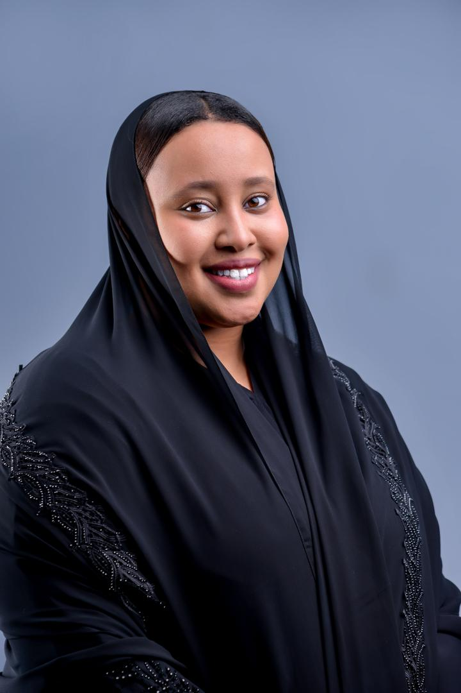
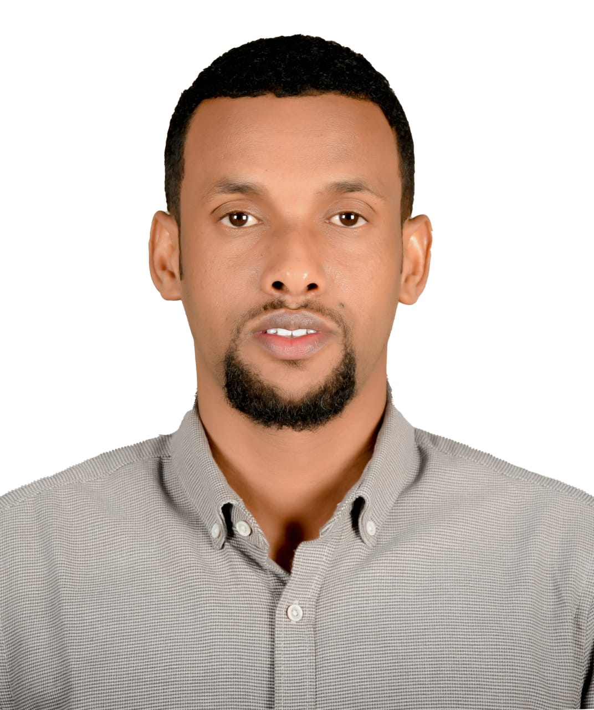
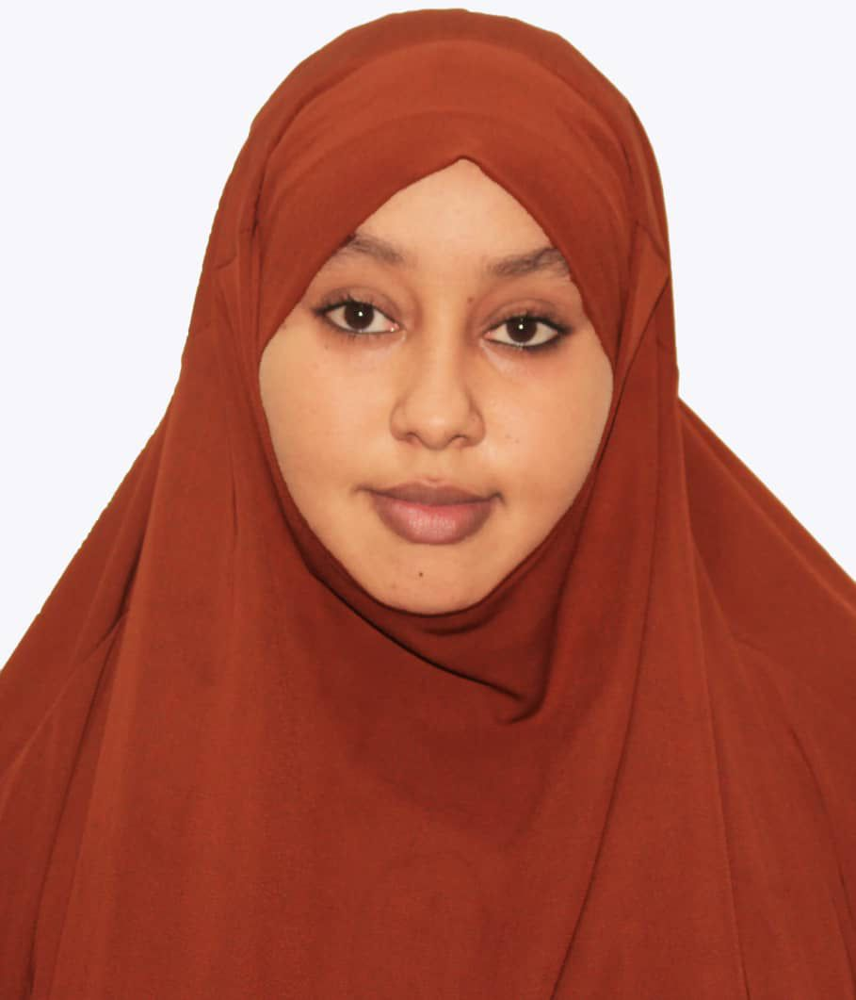
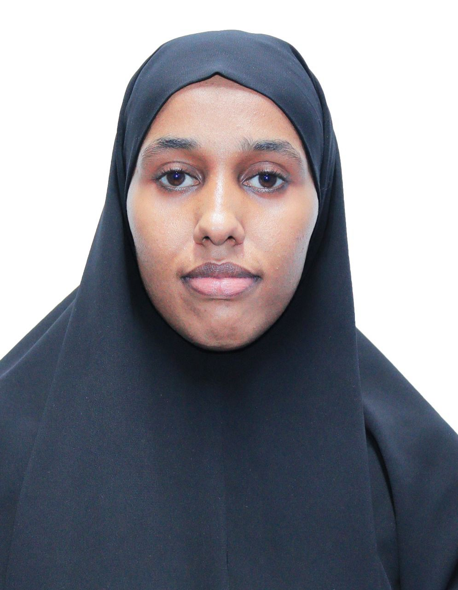
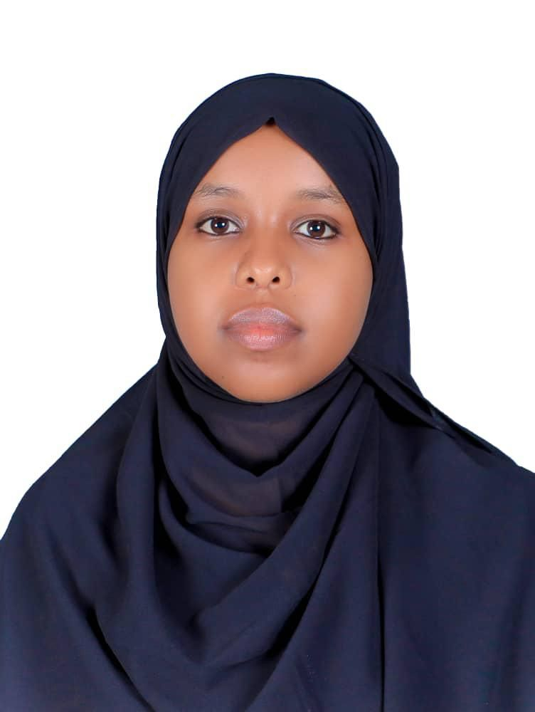

Helping Hands, Changing Lives
Empowering communities in Puntland's Sool, Sanaag & Cayn through education, healthcare, gender equality and sustainable development.
The Saharla Foundation is a humanitarian and development organisation dedicated to fostering sustainable change in Somalia's conflict-affected regions of Sool, Sanaag, and Cayn.
We enhance education, healthcare, livelihoods, and gender equality through targeted initiatives developed with local communities, government agencies, and international organisations.
Through our comprehensive approach, we build resilient communities capable of overcoming the challenges of conflict and climate change — working towards a more prosperous and peaceful future.
Together, we're contributing to Somalia's peace and prosperity through the transformative power of educated, empowered women.— Saynab Shire, Executive Director
A prosperous and peaceful Puntland where all individuals, regardless of gender or clan, realise their full potential through equitable access to education, healthcare, and economic opportunities.
To empower vulnerable communities by providing equitable access to education, healthcare, livelihood resources, and gender equality initiatives — aligned with the UN Sustainable Development Goals.
Enabling individuals to take charge of their development journey.
Accessible to all, regardless of gender, age, or clan.
Long-term solutions that foster self-reliance and resilience.
Highest standards of transparency and accountability.
Working with communities and partners to maximise impact.
Equal rights and opportunities for women and girls.
Fostering reconciliation and social cohesion.
Climate-resilient practices protecting communities.
Seven strategic programmes addressing the most critical needs in Sool, Sanaag and Cayn.
Constructing and renovating schools with emphasis on girls' education and displaced communities. Providing teacher training, adult literacy, scholarships, and vocational training centres for economic recovery.
Supporting healthcare facility construction and rehabilitation. Training and deploying healthcare workers, including conflict-related specialists. Implementing disease prevention and emergency response programmes.
Vocational training and apprenticeships to enhance youth employability. Entrepreneurship support for young people and SMEs. Sports, technology and life skills programmes building confident future leaders.
GBV prevention and response initiatives with comprehensive support for survivors. Promoting women's economic empowerment through skills training and finance access, and advocating for policy change.
Facilitating dialogue and mediation among different clans and stakeholders. Conflict resolution training for community leaders and organisations. Supporting human rights protection and access to justice.
Supporting sustainable crop production and livestock development, facilitating access to agricultural inputs for small-scale farmers. Strengthening cooperatives and water resource management.
Climate-smart agriculture, reforestation campaigns and water harvesting infrastructure to help communities adapt. Renewable energy solutions and disaster risk reduction plans. Collaborating with UNEP and FAO.
Needs assessments and targeted teacher training in conflict-affected schools.
Healthcare worker training focusing on trauma, mental health and conflict-related care.
Vocational training for youth improving employability and entrepreneurship skills.
Comprehensive GBV prevalence and psychological trauma assessment across SSC regions.
School construction projects increasing quality education access for displaced children.
Tree-planting drives, water harvesting and climate-smart agriculture training.
Our work aligns with the UN Sustainable Development Goals — combining immediate action with long-term planning for lasting impact.
Our Board provides strategic guidance ensuring the Foundation's effective operation and alignment with its mission.

Leading the Foundation's strategic direction with a commitment to sustainable development and community empowerment.

Extensive experience managing humanitarian and peacebuilding initiatives in conflict-affected regions of Puntland.

Contributing expertise in organisational development, governance, and strategic planning across the Foundation.




Follow our latest activities, community events, and programme updates. Updated regularly for our donors and partners.
Working with elders and clan leaders to ensure programmes are culturally appropriate.
Collaborating with ministries and local authorities to align with development priorities.
Partnering with UN agencies and international NGOs to leverage expertise and resources.
Engaging businesses to provide technical support, funding, and employment opportunities.
Collaborating with universities and research centres for evidence-based programmes.
Working with UNEP, FAO and climate institutions on climate adaptation programmes.
Amall Mall, Lasa'nod, Sool Region, Somalia
+252 634 495 951
+252 611 135 566